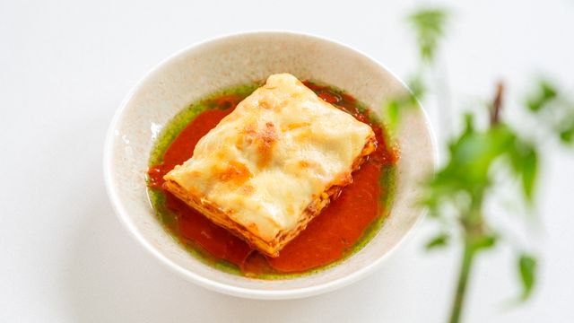

Lasagna

Homemade Lasagna Recipe
This classic homemade lasagna features layers of tender pasta, a rich and savory meat sauce, and a creamy
three-cheese blend. The heart of the dish is a slowly simmered ragù made with ground beef, Italian sausage,
crushed tomatoes, and aromatic herbs like basil and oregano. This deeply flavorful sauce is layered between
sheets of lasagna noodles and a luscious filling of ricotta, shredded mozzarella, and grated Parmesan cheese
Baked until golden and bubbling, the lasagna develops beautifully crisp edges while remaining incredibly tender
and juicy in the center. As it rests out of the oven, the layers meld together perfectly, creating a comforting,
crowd-pleasing meal that tastes even better the next day. It is the ultimate comfort food, perfect for family
Sunday dinners or cozy gatherings with friends.
Ingredients
- Ground beef and Italian sausage
- Crushed tomatoes and tomato paste
- Onion, garlic, and olive oil
- Dried basil, oregano, salt, and black pepper
- Ricotta cheese (or cottage cheese as a lighter substitute)
- Egg (beaten into the ricotta to bind the filling)
- Mozzarella cheese (shredded, used between layers and melted on top)
- Parmesan cheese (grated, for a sharp, savory bite)
- Lasagna noodles
Steps
- Cook the meat and sauce: Brown the ground beef and Italian sausage with chopped onion and garlic in a large
pot. Drain any excess grease, then stir in the crushed tomatoes, tomato paste, basil, oregano, salt, and
pepper. Simmer on low heat for 15–20 minutes to let the flavors combine.
- Prep the noodles and cheese: Boil your lasagna noodles according to the package instructions until they are
al dente (slightly firm), then drain them. In a separate bowl, mix the ricotta cheese with one beaten egg
and a handful of grated Parmesan.
- Layer the bottom: Spread a thin layer of the meat sauce across the bottom of a 9x13-inch baking dish to keep
the pasta from sticking. Place a single layer of noodles over the sauce, slightly overlapping them.
- Build the middle layers: Spread a portion of the ricotta mixture over the noodles, sprinkle with a handful
of shredded mozzarella, and top with another layer of meat sauce. Repeat this exact sequence (noodles,
ricotta, mozzarella, sauce) two more times.
- Top it off: Place a final layer of noodles on top. Cover them with the remaining meat sauce, then generously
blanket the top with the rest of your mozzarella and Parmesan cheese.
- Bake until bubbling: Cover the dish loosely with aluminum foil (make sure it doesn't touch the cheese) and
bake at 375°F (190°C) for 25 minutes. Remove the foil and bake for another 15–20 minutes until the cheese is
melted, golden-brown, and bubbling at the edges.
Home